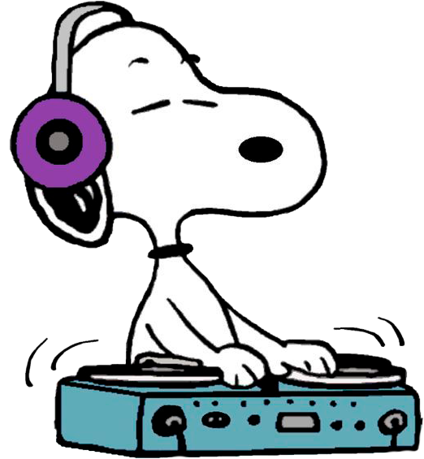

☰ Menú
🏠 Inicio
🏃 Snoopy Jump
🧠 Preguntados
🧩 Memoria
👨🍳 Food Truck
🏆 Mis Códigos
🔓 Desbloquear Todo (Admin)
🧹 Reset DJ (Admin)
Sobre esta canción...
Cerrar

Dj Snoopy 🎵
Nueva canción cada 24 horas.
✨ EMPEZAR A DESCUBRIR